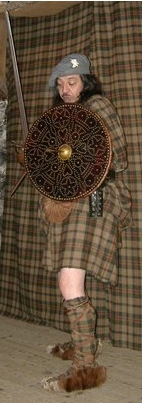

An Breacan uallach
Le Alasdair Mac Mhaighstir Alasdair
The Proud Plaid
Le plaid superbe
by/par Alexander McDonald

Tune "He'n Clo-Dubh"
Sequenced by Christian Souchon
(Source: Alexander Campbell i.24, quoted in "Highland songs of the '45" - John Lorne Campbell
"Am Breacan Uallach"
sung by Rev. William Matheson, recorded in August 1965 by Alan J. Bruford
Sheet music - Partition

|
THE PROUD PLAID [1] Lay Hey, the black cloth, Ho, the black cloth, Hey, the black cloth, The plaid was better. 1. More I loved the proud plaid Beneath my arms and round my shoulders, Than any coat I could get, Though of the finest cloth from England. 2. My favourite is the clothing Which needs the girdle for its fastening, (1 bis) The plaid in folds a-flowing, When I arose to make my journey. 3. The neat plaid of the drooping folds, That was a fitting dress for heroes; In thee I'd walk the streamlets 'Midst cold hills and on the green thou'rt pretty. 4. True dress of the soldier, Practical, when sounds the war-cry, Graceful in the advance thou art, When bagpipes sound and banners flutter. 5. Thou'rt splendid too, when comes the charge, And swords are drawn from scabbards, The finest garb to set the rout, And in the feet put swiftness. 6. Thou wast good to hunt the deer in, When the sun arose o'er hillside, And I would lightly go in thee Sunday morning church wards. 7. Closely wrapped I'd lie in thee, And like the roedeer spring up quickly,[2] Far readier to wield my arms Than red coat with his clattering musket. 8. When the black-cock 's murmuring On a knoll in th' dewy morning, 'Twas finer then to use thee Than any dirty ragged black coat. 9. In thee I'd go to weddings, And never brush the dewy grass, 'That was the handsome garment That dearly loved the bride to see. 10. In woodlands thou wast splendid To give me covering and warmth, From driven snow or Scots mist Or showers thou wast my guard. 11. Above thee, truly beautiful, Would lie the carved shield, And the sword, on handsome belt, Aslant thy pleated folds. 12. Well with thee would go my gun Lightly beneath my arm, Thou wast my full protection From rain and storm and every ill. 13. Thou wast fine at night time, My choice thou wast as bed-clothes; Better than the finest sheets Of costly linen in Glasgow. 14. Tidy, pretty, handsome, For wedding or for mod (2 bis) the tartan; Up the flowing plaid With shoulder pin to fasten it! 15. Thou'rt good by day or night time, And comely upon hill or sea-shore, In hosting or in peace time, No King was he who thee forbade. 16. He thought that thus he'd blunted The keenness of the Gaels so valiant, But he has only made them Still sharper than the edge of razor. 17. He's left them full of malice, As ravenous as dogs a-starving, No draught can quench their thirst now Of any wine, save England's life-blood. 18. Though you tear our hearts out, And rend apart our bosoms, Never shall you take Prince Charles From us, till we're a-dying. 19. To our souls he's woven, Firmly waulked, and tightly locked, Ne'er can he be loosened From us till he is cut away. 20. Just as the wife in travail Suffers ere her child's delivered, Yet instead of turning from him, Her passion for her spouse is doubled. 21. Though on us you've put fetters Tightly-fixed to stop us moving, Yet will we run as swiftly, More tireless than the deer on hillside. 22. We're still of our old nature As were we ere the Act was passed, Alike in mind and persons And loyalty, we will not weaken. 23. Our blood is still our fathers', And ours the valour of their hearts, The inheritance they left us Loyalty-that is our creed. 24. Cursed be every person Who's still unwilling to rise for thee [3] Whether he has clothing, Or though he be stark naked. 25. My darling the young hero, Who left us to go o'er the sea, Thy country's warmest wishes And prayers will follow thee. 26. And though you overcame us Once through a kind of mishap, In devil a battle in his life-time Shall again the Butcher conquer. Transl. from the Gaelic by John Lorne Campbell, "Highland Songs of the '45" - 1932) |
AM BREACAN UALLACH Luinneag He 'n clo-dubh, Ho 'n clo-dubh, He 'n clo-dubh, B'fhearr am breacan! 1. B'Phearr liom breacan uallach, Mu m' ghuaillibh, 's a chur fo m' achlais, Na ge do gheibhinn cota De'n chlo as fearr thig a Sasgunn. 2. Mo laochan fein an t-eideadh, A dh'fheumadh an crios da ghlasadh, Cuaicheineachadh eilidh, D'eis eirigh gu dol air astar. 3. Eileadh cruinn nan cuaichean, Gur buadhail an t-earradh gaisgich; Shiubhlainn leat na fuarain Feadh fhuar-bheann;'s bu ghasd' air faich' thu. 4. Fior-chulaidh an t-soighdeir, 'S neo-ghloiceil ri h-uchd na caismeachd, 'S ciatach 'san adbhlln8 thu, Fo shrannraich nam piob 's nam bratach. 5. Cha mhios' anns an dol slos thu, 'N uair sgrlobar a duille claisich; Fior-earradh na ruaige, Gu luas a chur anns na casaibh! 6. Bu mhaith gu sealg an fheidh thu, 'N am eirigh do 'n ghrein air creachanil, Us dh'fhalbhainn leat gu lothmhor Di-Domhnaich a' dol do 'n chlachan. 7. Laighinn leat gu ciorbail, 'S mar earbaig gum briosgainn grad leat, Na b'ullamh' air m'armachd Na dearganach 's mosgaid ghlagach. 8. 'N am coilich a bhith durdan Air stucan am maidinn dhealta, Bu ghasda t'fheum 'sa chuis sin Seach mutan de thrusdar casaig. 9. Shiubhlainn leat a phosadh, 'S bharr feoirnein cha fhroisinn dealta; B'I siod an t-suanach bhoidheach, An og-bhean bu mh6r a tlachd dhith. 10. B'aigeantach ..sa choill' thu, Dam choibhreadh le d' bhlaths 's le t'fhasgadh O chathadh us o chrion-chur, Gun dionadh tu mi ri frasachd. 11. Air 'uachdar gura sgiamhach A laigheadh an sgiath air a breacadh, 'S claidheamh air chrios ciatach, Air fhiaradh os ciol1n do phleata. 12. 'S deas a thigeadh cuilbhear Gu suilbheara leat fo 'n asgajll, 'S a dh'aindeoin uisg' us urchaid, No tuil-bheum gum biodh air fasgadh. 13. Bu mhaith anns an oidhch'thu, Mo loinn thu mar aodach-leapa; B'fhearr liom na'm brat-lin thu As priseile mhln tha 'n Glaschu. 14. 'S baganta, grinn, boidheach, Air banais us air mod am breacan; Suas an eileadh-sguaibe, 'S dealg-gualainn a' cur air fasdaidh. 15. Bu mhaith an la 's an oidhch' thu, Bha loinn ort am beinn 's an cladach; Bu mhaith am feachd 's an sith thu- Cha Righ am fear a chuir as duit. 16. Shaoil leis gun do mhaolaich so Faobhar nan Gilidheal tapaidh, Ach 's ann a chuir e geir' orr', Na's beurra na deud na h-ealtainn'. 17. D'fhag e iad lan mi-ruin, Cho ciocrasach ri coin acrach; Cha chaisg deoch an iotadh, Ge b'fhion e, ach fior-fhuil Shagsuinn. 18. Ged spion sibh an cridhe asainn, 'S ar braillichean sios a shracadh, Cha toir sibh asainn Tearlach Gu brath gus an tcjd ar tachdadh. 19. R'ar n-anam tha e fuaighte Teann-luaidhte cho cruaidh ri glasan, 'S uainn cha n-fhaodar 'fhuasgladh, Gu 'm buainear am fear ud asainn. 20. Cleas na mna-siubhla Gheibh tuillinn mu 'm beir i a h-asad, An ionad a bhith 'n diumb ris, Gun dubail d'a fear a lasan. 21. Ged chuir sibh oirnne buarach Thiugh-luaidhte, gu 'r falbh a bhacadh, Ruithidh sinn cho luath 'S na's buaine na feidh a' ghlasraich. 22. Tha sinn 'san t-sean-nadur A bha sinn roimh am an achda, Am pearsanna 's an inntinn, 'S 'nar rioghalachd, cha teid lagadh. 23. 'S i 'n fhuil bha 'n cuisl' ar sinnsreadh, 'S an innsginn a bha 'nan aigne, A dh 'fhag dhuinne mar dhilib, Bhith rioghail-O,'s sin ar paidir! 24. Mallachd air gach seorsa Nach deonaicheadh fos falbh leatsa, Cia dhiubh bhiodh aca comhdach No comhruisgt', lom gu 'n craicionn. 25. Mo chion an t-og feardha Thar fairge chaidh uainn air astar; Durachd bhlath do dhuthcha 'S an urnuigh gun lean do phearsa. 26. 'S ged fhuair sibh lamh-~n-uachdar Aon uair oirnn le seorsa tapaig, An donas blar ri 'bhe6-san Ni 'm Feoladair tuilleadh tapaidh. Source: Sar Obair nam Bard Gaelach (1841) |
LE PLAID SUPERBE [1] Refrain Pas de drap noir! Fi du drap noir! Moi c'est le plaid Que je préfère! 1. Lové sur mes épaules Le plaid passé sous mes bras, Valait bien, sublime étole, De l'Angleterre tous les draps. 2. L'habit que je préfère A la ceinture se fixait Faisant des plis superbes, Lorsque l'on partait en tournée. (1 bis) 3. Dans ces plaids dont s'ornèrent Dignement tant de hauts-faits. On peut passer les rivières. Ils s'accordent au vert des prés. 4. Le plaid au soldat apporte, Quand il s'avance, l'orgueil. La cornemuse l'exhorte: Il le revêt en un clin d'oeil. 5. Lorsqu'on sonne la charge, L'épée jaillie du fourreau, Que l'ennemi prend le large Nous à ses trousses, qu'il est beau! 6. Quoi de mieux pour la chasse, Quand l'aube point sur les monts? Je le portais à l'église Le dimanche pour l'oraison. 7. Quand la nuit on s'en drape C'est, comme un daim, pour en sauter, [2] Plus prompt à manier la lame, Que l'Habit rouge son mousquet. 8. Quand le bruit de la girouette Se mêle au glas, le matin, Quel autre vêtement mettre? D'un manteau noir je ne veux point! 9. On l'arbore aux mariages, Humide d'herbe et de rosée C'est la mise d'usage Celle que veut voir la mariée! 10. Dans les bois quelle aubaine! Il procure abri, chaleur. Contre neige, brume gaëlle, Pluie, l'universel protecteur! 11. Le "targe" et ses sculptures Darde ses éclairs devant toi Comme le sabre à la ceinture, Oblique sur les plis bien droits. 12. Le pistolet complète Le tout, placé près du bras. Pluie, maladie, même tempête, J'en étais protégé par toi. 13. Même chandelle éteinte Le plaid tenait mon lit au chaud Bien mieux que drap ou courtepointe En toile fine de Glasgow. 14. Aux "mods" (2 bis) et mariages Le plaid chatoyant imprimait Sa belle et élégante image, Lui qu'à l'épaule l'on fixait. 15. La nuit, le jour utile, Sur terre et sur mer à la fois, En temps de paix ou de litige. Qui t'a banni n'est pas un roi. 16. Il pensait que s'émousse- rait l'ardeur des Gaëls si vaillants Il n'a fait qu'arroser la pousse Pour en faire un épieu géant. 17. Pleins de haine maligne Les Gaëls sont des chiens assoiffés Non point du jus de quelque vigne Mais du sang fumant des Anglais. 18. Que nos poitrines saignent! Arrache nous le coeur encor; Le Prince Charles en maître y règne Jusqu'à ce que nous soyons morts. 19. Aux fibres de nos âmes Que les fouleuses ont tassées Il est mêlé. De cette trame Tant qu'il vit, nul ne peut l'ôter. 20. Avant qu'elle n'accouche, Celle qui souffre en mal d'enfant, Ne s'enfuit ni ne s'effarouche: Elle aime l'époux plus qu'avant. 21. Qu'importe les entraves Qui limitent nos libertés! Nous sommes vifs, infatigables, Comme le cerf au pied léger. 22. C'est là notre nature Ton décret n'y peut rien changer Les esprits et les créatures Resteront loyaux sans broncher. 23. De nos coeurs nul n'altère Le courage, ni notre sang: C'est l'héritage de nos pères; Notre loyauté, tout autant. 24. Et maudits soient les tièdes Hésitant à se rebeller. [3] Pour ce faire un plaid est une aide, Même tout nu cela se fait 25. Celui que je vénère Et qui repassa l'océan, Nos prières et souhaits sincères Iront partout l'accompagnant. 26. Vous avez pu nous vaincre, Nous fûmes malchanceux un jour. Mais le Boucher, soyez sans crainte, Mordra la poussière à son tour. (Trad. Ch. Souchon (c) 2009) |
|
The following notes [numbered in brackets] are taken from "Highland Songs of the '45" by John Lorne Campbel, 1932. [1] Of the many songs lamenting the suppression of the Highland garb, this is alike the most comprehensive in its praises and the most spirited in its expression. The tartan was forbidden to loyal and disloyal clans alike from 1747 to 1782, the penalty for wearing it being six months' imprisonment for the first offence and seven years' transportation for the second. (See also comment to "The Stolen Breeks"). (1 bis) The "garb of old Gaul" described in this song is the "breacan féile" (belted plaid), a combination of kilt and plaid consisting of twelve ells of tartan neatly plaited and fastened round the body by a belt, the lower part forming the kilt and the other half being fixed to the shoulder with a brooch and hanging down behind to form the plaid. People made a point of arranging the plaits, so as to show the "sett" of the pattern. This type of garment was different from the "féile-beag" (little kilt) that was made of six ells of tartan "only", also plaited but sewn and fixed round the waist with a strap, half a yard being left plain at each end, which crossed each other in front. This is really the modern form of the Highland kilt. The "Discolthing Act" of 1747 prohibited beside these two clothes other parts of the traditional Highland dress. [2] "In such times of danger, or during a war, we had a different method of using the plaid, that with one spring I could start to my feet with drawn sword and cock'd pistol in my hand without being in the least encumber'd with my bedclothes" (Lockhart Papers, ii. 480). The chronicler (possibly MacDonald himself) describes the Highland dress to Prince Charles. (2 bis) A "mod" is a festival of Scottish Gaelic song, arts and culture. Historically, the Gaelic word mòd refers to any kind of assembly. [3] McDonald has his own countrymen in mind here, for there was much discontent amongst the loyal clans, who were deprived of their arms and garb in precisely the same way as those who had taken part in the Rising. |
Les notes [numérotées entre crochets]qui suivent sont tirées des "Chants des Highlands de 1745" de John Lorne Campbell, 1932. [1] Parmi les nombreux chants déplorant l'interdiction du costume des Highlands, celui-ci est sans doute celui qui fait l'éloge le plus appuyé et le plus spirituel du tartan. Cette interdiction fut en vigueur de 1747 à 1782 pour tous les clans, qu'ils aient été fidèles ou non au régime, et elle était assortie d'une peine de six mois de prison et, en cas de récidive, d'une peine de déportation de sept années aux colonies. (Cf. aussi le commentaire pour le chant "Les braies volées"). (1bis) L'"habit des Gaulois" décrit dans ce chant est le "breacan féile" (le plaid passé dans la ceinture), une combinaison de kilt et de plaid formée par une pièce de tartan de 11 aunes (4,62 m!) soigneusement plissée et fixée autour de la taille par une ceinture, cette partie inférieure formant le kilt, tandis que l'autre, retenue sur l'épaule par une broche, pendait sur le dos et formait le plaid. On s'appliquait en faisant les plis à faire apparaître le "pavé" (sett) central du motif. Ce type de vêtement était différent du "féile-beag" (petit kilt), une pièce de tissus de 6 aunes "seulement" (2.50 m), également plissée mais cousue sur une bande servant de ceinture, 50 cm à chaque extrémité restant non plissés et se croisant sur le devant. C'est en fait cette version qui a donné le kilt écossais que nous connaissons aujourd'hui. Le "Disclothing Act" de 1747, interdisait, outre ces deux vêtements, d'autres éléments vestimentaires propres aux Highlands. [2] "En cas de danger ou pendant une guerre, on portait le plaid d'une autre façon, pour pouvoir se mettre debout d'un bond tout en dégainant son épée et en armant son pistolet, sans être encombré par ses draps de lit." (Lockhart Papers, ii. 480). L'auteur de cette chronique (peut-être MacDonald lui-même) décrit le costume des Highlands au Prince Charles. (2 bis) Un "mod" est un concours de chant, d'arts et autres productions culturelles gaéliques. Autrefois ce mot gaélique désignait toutes sortes de réunions publiques. [3] McDonald fait ici allusion à ses propres concitoyens, car le mécontentement était vif parmi les clans fidèles au gouvernement qui se virent privés de leurs armes et de leur costume traditionnel tout comme ceux qui avaient pris part au soulèvement. |